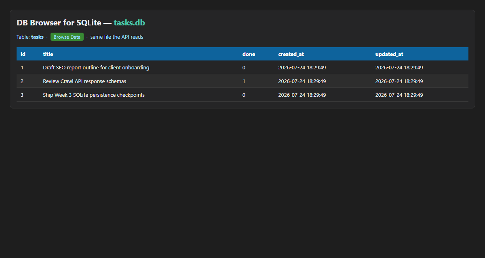

A2 · Persistence lane · FlyRank W3
SQLite Task API
Same CRUD doors as A1, but the shelf is a SQLite file. Restart keeps the data. Seed three tasks only when the table is empty.

Surface
| Method | Path | Meaning |
|---|---|---|
GET | /tasks | SELECT + filters |
POST | /tasks | INSERT |
PUT | /tasks/{id} | UPDATE |
DELETE | /tasks/{id} | DELETE |
GET | /stats | Aggregates from SQL |